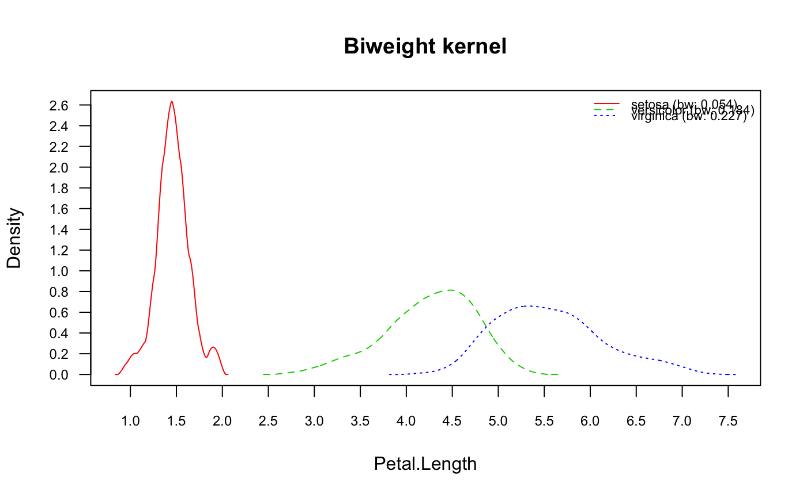
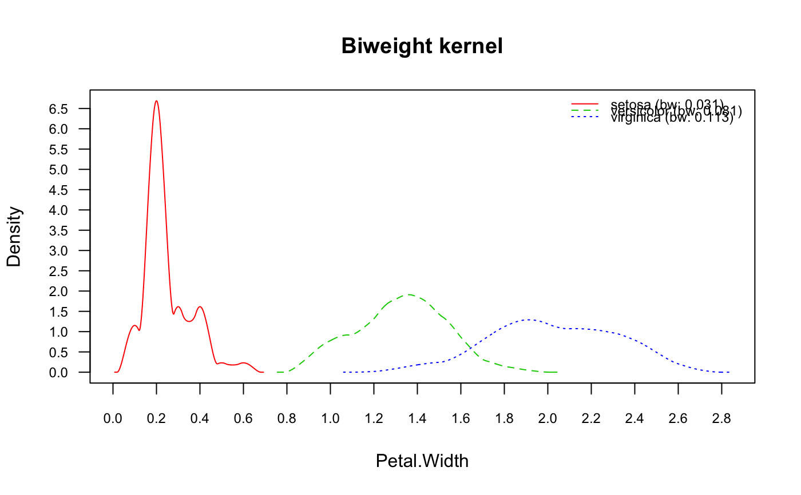

Naive Bayes Classifier
naive_bayes.Rdnaive_bayes is used to fit Naive Bayes model in which predictors are assumed to be independent within each class label.
# S3 method for default naive_bayes(x, y, prior = NULL, laplace = 0, usekernel = FALSE, usepoisson = TRUE, ...) # S3 method for formula naive_bayes(formula, data, prior = NULL, laplace = 0, usekernel = FALSE, usepoisson = TRUE, subset, na.action = stats::na.pass, ...)
Arguments
| x | matrix or dataframe with categorical (character/factor/logical) or metric (numeric) predictors. |
|---|---|
| y | class vector (character/factor/logical). |
| formula | an object of class |
| data | matrix or dataframe with categorical (character/factor/logical) or metric (numeric) predictors. |
| laplace | value used for Laplace smoothing (additive smoothing). Defaults to 0 (no Laplace smoothing). |
| usekernel | logical; if |
| usepoisson | logical; if |
| prior | vector with prior probabilities of the classes. If unspecified, the class proportions for the training set are used. If present, the probabilities should be specified in the order of the factor levels. |
| subset | an optional vector specifying a subset of observations to be used in the fitting process. |
| na.action | a function which indicates what should happen when the data contain |
| ... | other parameters to |
Value
naive_bayes returns an object of class "naive_bayes" which is a list with following components:
list with two components: x (dataframe with predictors) and y (class variable).
character vector with values of the class variable.
value of Laplace smoothing (additive smoothing).
list of tables. For each categorical predictor a table with class-conditional probabilities, for each integer predictor a table with Poisson mean (if usepoisson = TRUE) and for each metric predictor a table with a mean and standard deviation or density objects for each class. The object tables contains also an additional attribute "cond_dist" - a character vector with the names of conditional distributions assigned to each feature.
numeric vector with prior probabilities.
logical; TRUE, if the kernel density estimation was used for estimating class conditional densities of numeric variables.
logical; TRUE, if the Poisson distribution was used for estimating class conditional PMFs of integer variables (numeric vectors with mode "integer").
the call that produced this object.
Details
Numeric (metric) predictors are handled by assuming that they follow Gaussian distribution, given the class label. Alternatively, kernel density estimation can be used (usekernel = TRUE) to estimate their class-conditional distributions. Also, non-negative integer predictors (variables representing counts) can be modelled with Poisson distribution (usepoisson = TRUE); integer variables are automatically recognised. Missing values are not included into constructing tables. Logical variables are treated as categorical (binary) variables.
See also
Examples
nb_kernel <- naive_bayes(x = iris[-5], y = iris[ ,5], usekernel = TRUE) plot(nb_kernel) # Gaussian kernel by default (see ?density)nb_kernel_triangular <- naive_bayes(x = iris[-5], y = iris[ ,5], usekernel = TRUE, kernel = "biweight") plot(nb_kernel_triangular, arg.num = list(main = c("Biweight kernel")))# NOT RUN { vars <- 10 rows <- 500000 y <- sample(letters[1:2], rows, TRUE) # Only categorical variables X1 <- as.data.frame(matrix(sample(letters[5:9], vars * rows, TRUE), ncol = vars)) format(object.size(X1), "Mb") nb_cat <- naive_bayes(x = X1, y = y) nb_cat system.time(pred2 <- predict(nb_cat, X1)) # Only numeric variables X2 <- as.data.frame(matrix(rnorm(vars * rows), ncol = vars)) nb_num <- naive_bayes(x = X2, y = y) nb_num system.time(pred2 <- predict(nb_num, X2)) # }